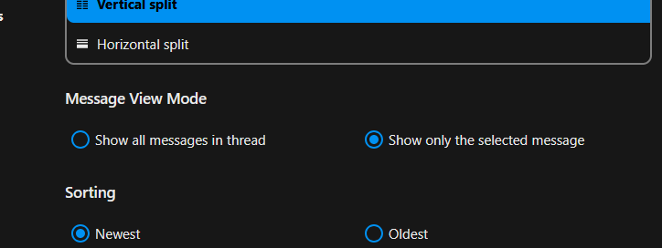
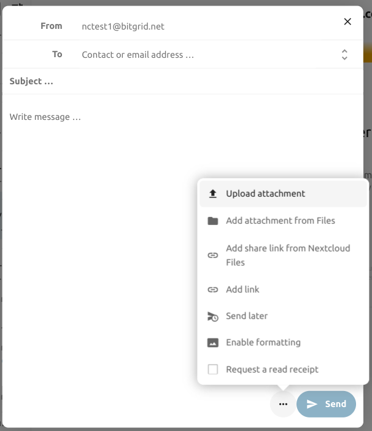
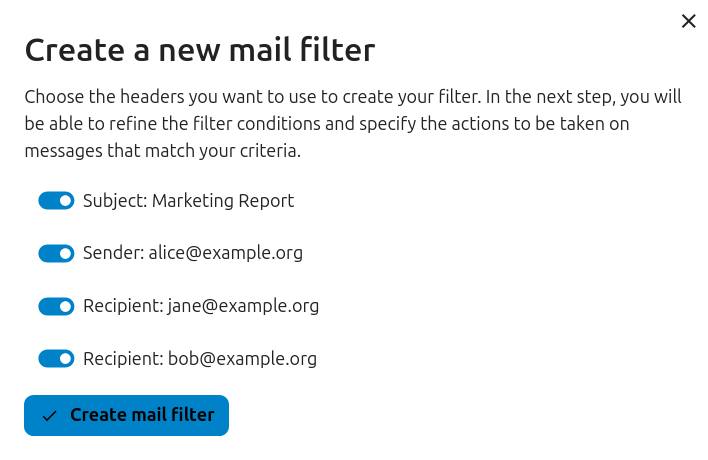

Χρήση της εφαρμογής Αλληλογραφίας
Σημείωση
Η εφαρμογή Αλληλογραφίας εγκαθίσταται από προεπιλογή με το Nextcloud Hub, αλλά μπορεί να απενεργοποιηθεί. Παρακαλώ ρωτήστε τον Διαχειριστή σας για αυτό.

Διαχείριση του λογαριασμού αλληλογραφίας σας
Αλλαγή διάταξης
Added in version 3.6.
Επισκεφτείτε τις ρυθμίσεις αλληλογραφίας
Επιλέξτε μεταξύ Λίστας, Κατακόρυφης διάσπασης και Οριζόντιας διάσπασης

Προβολή Μηνυμάτων / Λειτουργική Λειτουργία
Added in version 5.2.
Η Αλληλογραφία έχει τη δυνατότητα εναλλαγής μεταξύ δύο διαφορετικών λειτουργιών προβολής και λειτουργίας μηνυμάτων: Συνομιλία και Μονό.
Στη λειτουργία Συνομιλία, τα μηνύματα ομαδοποιούνται ανά συνομιλία. Στη λίστα μηνυμάτων του γραμματοκιβωτίου, τα σχετικά μηνύματα στοιβάζονται έτσι ώστε να εμφανίζεται μόνο το πιο πρόσφατο μήνυμα και όλα τα σχετικά μηνύματα εμφανίζονται στο πλαίσιο προβολής μηνυμάτων αφού επιλεγεί το στοιβαγμένο μήνυμα. Αυτό είναι χρήσιμο για την παρακολούθηση συζητήσεων και την κατανόηση του πλαισίου των απαντήσεων. Σε αυτή τη λειτουργία, λειτουργίες μηνυμάτων όπως η μετακίνηση και η διαγραφή ισχύουν για ολόκληρη τη συνομιλία, πράγμα που σημαίνει ότι όταν μετακινείτε ή διαγράφετε μια συνομιλία, όλα τα μηνύματα εντός αυτής της συνομιλίας επηρεάζονται.
Στη λειτουργία Μονό, τα μηνύματα εμφανίζονται μεμονωμένα, τόσο στη λίστα μηνυμάτων του γραμματοκιβωτίου όσο και στο πλαίσιο προβολής μηνυμάτων και λειτουργίες όπως η μετακίνηση και η διαγραφή ισχύουν μόνο για το επιλεγμένο μήνυμα. Αυτή η λειτουργία είναι χρήσιμη όταν θέλετε να διαχειριστείτε μηνύματα ξεχωριστά χωρίς να επηρεάζετε ολόκληρη τη συνομιλία.
Επισκεφτείτε τις ρυθμίσεις αλληλογραφίας
Επιλέξτε μεταξύ Συνομιλία, Μονό

Προσθήκη νέου λογαριασμού αλληλογραφίας
Ενεργοποιήστε την εφαρμογή αλληλογραφίας από τις εφαρμογές
Κάντε κλικ στο εικονίδιο αλληλογραφίας στην κεφαλίδα
Συμπληρώστε τη φόρμα σύνδεσης (αυτόματα ή χειροκίνητα)

Αλλαγή σειράς ταξινόμησης
Added in version 3.5.
Επισκεφτείτε τις ρυθμίσεις αλληλογραφίας
Μεταβείτε στην Ταξινόμηση
Μπορείτε να επιλέξετε Παλαιότερα ή Νεότερα μηνύματα πρώτα
Σημείωση
Αυτή η αλλαγή θα ισχύσει για όλους τους λογαριασμούς και τα γραμματοκιβώτια σας
Sort favorites up
Added in version 5.7: Nextcloud 31 or newer
This setting allows you to show messages set as favorite in a separate section on top of the message list.
Επισκεφτείτε τις ρυθμίσεις αλληλογραφίας
Go to Appearance
Enable sorting favorites up
Προγραμματισμένα μηνύματα
Κάντε κλικ στο κουμπί νέου μηνύματος στην επάνω αριστερή γωνία της οθόνης σας
Κάντε κλικ στο μενού ενεργειών (…) στον μοντάλο σύνθεσης
Κάντε κλικ στο αποστολή αργότερα

Γραμματοκιβώτιο προτεραιότητας
Το γραμματοκιβώτιο προτεραιότητας έχει 2 ενότητες Σημαντικά και Άλλα. Τα μηνύματα θα σημειώνονται αυτόματα ως σημαντικά με βάση ποια μηνύματα αλληλεπιδράσατε ή σημειώσατε ως σημαντικά. Στην αρχή μπορεί να χρειαστεί να αλλάξετε χειροκίνητα τη σημασία για να διδάξετε το σύστημα, αλλά θα βελτιωθεί με το χρόνο.
The automatic classification is optional. You can opt-out when setting up an account. The classification can also be turned on and off in the account settings at any time.

Όλα τα εισερχόμενα
Όλα τα μηνύματα από όλους τους λογαριασμούς που έχετε συνδεθεί, θα εμφανίζονται εδώ χρονολογικά.
Ρυθμίσεις λογαριασμού
Οι ρυθμίσεις του λογαριασμού σας όπως:
Ψευδώνυμα
Υπογραφή
Προεπιλεγμένοι Φάκελοι
Αυτόματος απαντητής
Έμπιστοι αποστολείς
..και άλλα
Μπορούν να βρεθούν στο μενού ενεργειών ενός λογαριασμού αλληλογραφίας. Εκεί μπορείτε να επεξεργαστείτε, να προσθέσετε ή να αφαιρέσετε ρυθμίσεις ανάλογα με τις ανάγκες σας.
Μετακίνηση μηνυμάτων στον φάκελο Ανεπιθύμητων
Added in version 3.4.
Η Αλληλογραφία μπορεί να μετακινήσει ένα μήνυμα σε διαφορετικό φάκελο όταν σημειωθεί ως ανεπιθύμητο.
Επισκεφτείτε τις Ρυθμίσεις λογαριασμού
Μεταβείτε στους Προεπιλεγμένους φακέλους
Ελέγξτε ότι έχει επιλεγεί ένας φάκελος για τα ανεπιθύμητα μηνύματα
Μεταβείτε στις Ρυθμίσεις ανεπιθύμητων
Κάντε κλικ στο Μετακίνηση μηνυμάτων στον φάκελο Ανεπιθύμητων

Refresh mailbox
You can manually trigger a sync of your mailbox by clicking the refresh button located at the top of the mailbox list.
Starting from version 5.7 triggering the sync will also refresh the list of folders for the selected account.
Αναζήτηση στο γραμματοκιβώτιο
Added in version 2.1.
Στην κορυφή της λίστας περιεχομένων σε οποιαδήποτε διάταξη αλληλογραφίας, υπάρχει μια συντόμευση πεδίου αναζήτησης για αναζήτηση θεμάτων email. Από την έκδοση 3.7, αυτή η συντόμευση σας επιτρέπει να αναζητάτε από προεπιλογή ανά θέμα, παραλήπτη (προς) ή αποστολέα (από).
Προχωρημένη αναζήτηση στο γραμματοκιβώτιο
Added in version 3.4.
Μπορείτε να αποκτήσετε πρόσβαση στη δυνατότητα προχωρημένης αναζήτησής μας μέσω ενός μοντάλου που βρίσκεται στο τέλος της συντόμευσης αναζήτησης.
Ενεργοποίηση αναζήτησης σώματος μηνύματος
Added in version 3.5.
Τα σώματα μηνυμάτων μπορούν πλέον να αναζητηθούν, αυτή η λειτουργία είναι προαιρετική λόγω πιθανών ζητημάτων απόδοσης.
Για να το ενεργοποιήσετε:
Επισκεφτείτε τις Ρυθμίσεις λογαριασμού
Μεταβείτε στην Αναζήτηση γραμματοκιβωτίου
Ενεργοποίηση αναζήτησης σώματος μηνύματος
Προειδοποίηση
Εάν θέλετε να το ενεργοποιήσετε και για ενοποιημένα γραμματοκιβώτια, πρέπει να το κάνετε στις Ρυθμίσεις αλληλογραφίας
Ενεργοποιώντας το, το κύριο πλαίσιο αναζήτησης θα αναζητά τώρα τόσο σε θέματα όσο και σε σώματα μηνυμάτων, και μια ξεχωριστή επιλογή Σώμα θα εμφανιστεί στην προχωρημένη αναζήτηση.
Ανάθεση λογαριασμού
Η εφαρμογή επιτρέπει την ανάθεση λογαριασμού, ώστε ένας χρήστης να μπορεί να στέλνει email από τη διεύθυνση ενός άλλου.
Η ανάθεση πρέπει να ρυθμιστεί στον διακομιστή αλληλογραφίας από έναν διαχειριστή
Προσθέστε την άλλη διεύθυνση email ως ψευδώνυμο για τον δικό σας λογαριασμό email
Κατά την αποστολή email, επιλέξτε το ψευδώνυμο ως αποστολέα
Προειδοποίηση
Το απεσταλμένο email μπορεί να μην είναι ορατό στον αρχικό λογαριασμό εάν είναι αποθηκευμένο στο προσωπικό σας γραμματοκιβώτιο Απεσταλμένα.
Αυτόματη διαγραφή απορριμμάτων
Added in version 3.4.
Η εφαρμογή Αλληλογραφίας μπορεί να διαγράφει αυτόματα μηνύματα στον φάκελο απορριμμάτων μετά από έναν ορισμένο αριθμό ημερών.
Επισκεφτείτε τις Ρυθμίσεις λογαριασμού
Μεταβείτε στην Αυτόματη διαγραφή απορριμμάτων
Εισάγετε τον αριθμό των ημερών μετά τις οποίες θα πρέπει να διαγραφούν τα μηνύματα
Απενεργοποιήστε τη διατήρηση απορριμμάτων αφήνοντας το πεδίο κενό ή ορίζοντάς το σε 0.
Σημείωση
Μόνο τα email που διαγράφηκαν μετά την ενεργοποίηση της διατήρησης απορριμμάτων θα επεξεργαστούν.

Σύνθεση μηνυμάτων
Κάντε κλικ στο νέο μήνυμα στην επάνω αριστερή γωνία της οθόνης σας
Αρχίστε να γράφετε το μήνυμά σας
Ελαχιστοποίηση του μοντάλου σύνθεσης
Added in version 3.2.
Το μοντάλο σύνθεσης μπορεί να ελαχιστοποιηθεί ενώ γράφετε ένα νέο μήνυμα, επεξεργάζεστε ένα υπάρχον προσχέδιο ή ένα μήνυμα από τα εξερχόμενα. Απλώς κάντε κλικ στο κουμπί ελαχιστοποίησης στην επάνω δεξιά γωνία του μοντάλου ή κάντε κλικ οπουδήποτε έξω από το μοντάλο.

Μπορείτε να συνεχίσετε το ελαχιστοποιημένο μήνυμά σας κάνοντας κλικ οπουδήποτε στον δείκτη στην κάτω δεξιά γωνία της οθόνης σας.

Πατήστε το κουμπί κλεισίματος στο μοντάλο ή τον δείκτη στην κάτω δεξιά γωνία για να σταματήσετε την επεξεργασία ενός μηνύματος. Ένα προσχέδιο θα αποθηκευτεί αυτόματα στο γραμματοκιβώτιο προσχεδίων σας.
Πληροφορίες παραλήπτη στον συνθέτη
Added in version 4.2.
Όταν προσθέτετε τον πρώτο σας παραλήπτη ή επαφή στο πεδίο «Προς», θα εμφανιστεί ένα δεξιό παράθυρο που εμφανίζει τις αποθηκευμένες λεπτομέρειες προφίλ αυτής της επαφής. Η προσθήκη δεύτερης επαφής θα συμπτύξει τη λίστα, επιτρέποντάς σας να επιλέξετε και να αναπτύξετε οποιαδήποτε επαφή που προσθέσατε για να δείτε τις λεπτομέρειές της. Εάν προτιμάτε να εστιάζετε αποκλειστικά στη γραφή στον συνθέτη, μπορείτε να αποκρύψετε το δεξιό παράθυρο κάνοντας κλικ στο εικονίδιο ανάπτυξης στην επάνω δεξιά γωνία. Για να εμφανίσετε ξανά το δεξιό παράθυρο, απλώς κάντε κλικ στο εικονίδιο ελαχιστοποίησης στην ίδια θέση.
Αναφορά επαφών
Added in version 4.2.
Μπορείτε να αναφέρετε επαφές στο μήνυμά σας πληκτρολογώντας @ και στη συνέχεια επιλέγοντας την επαφή από τη λίστα. Με αυτόν τον τρόπο η επαφή θα προστεθεί αυτόματα ως παραλήπτης.
Σημείωση
Μόνο επαφές με έγκυρη διεύθυνση email θα προτείνονται.
Μπλοκ κειμένου
Added in version 5.2.
Τα μπλοκ κειμένου είναι προκαθορισμένα αποσπάσματα κειμένου που μπορούν να εισαχθούν στο email σας. Μπορούν να δημιουργηθούν και να διαχειριστούν στις ρυθμίσεις αλληλογραφίας. Μπορούν να εισαχθούν στον συνθέτη πληκτρολογώντας ! και στη συνέχεια επιλέγοντας το μπλοκ από τη λίστα ή από τις ενέργειες του συνθέτη. Τα μπλοκ κειμένου μπορούν να κοινοποιηθούν με χρήστες και ομάδες χρηστών.
Εξερχόμενα
Όταν ένα μήνυμα έχει συντεθεί και πατηθεί το κουμπί «Αποστολή», το μήνυμα προστίθεται στα εξερχόμενα που μπορούν να βρεθούν στην κάτω αριστερή γωνία της αριστερής πλαϊνής γραμμής.
Μπορείτε επίσης να ορίσετε την ημερομηνία και ώρα για τη λειτουργία αποστολής σε κάποιο σημείο στο μέλλον (δείτε Προγραμματισμένα μηνύματα)- το μήνυμα θα παραμείνει στα εξερχόμενα μέχρι να φτάσει η επιλεγμένη ημερομηνία και ώρα, στη συνέχεια θα αποσταλεί αυτόματα.
Τα εξερχόμενα είναι ορατά μόνο όταν υπάρχει ένα μήνυμα που περιμένει να το χειριστεί τα εξερχόμενα.
Μπορείτε να ξανανοίξετε τον συνθέτη για ένα μήνυμα στα εξερχόμενα ανά πάσα στιγμή πριν ενεργοποιηθεί η λειτουργία «αποστολή».
Σημείωση
Όταν παρουσιαστεί σφάλμα κατά την αποστολή, είναι δυνατά τρία μηνύματα σφάλματος:
- Δεν ήταν δυνατή η αντιγραφή στο γραμματοκιβώτιο «Απεσταλμένα»
Το email στάλθηκε αλλά δεν μπορούσε να αντιγραφεί στο γραμματοκιβώτιο «Απεσταλμένα». Αυτό το σφάλμα θα χειριστεί από τα εξερχόμενα και η λειτουργία αντιγραφής θα δοκιμαστεί ξανά.
- Σφάλμα διακομιστή αλληλογραφίας
Η αποστολή ήταν ανεπιτυχής με μια κατάσταση που μπορεί να επαναληφθεί (π.χ.: ο διακομιστής SMTP δεν μπορούσε να προσεγγιστεί). Τα εξερχόμενα θα επαναλάβουν την αποστολή του μηνύματος.
- Το μήνυμα δεν μπορούσε να αποσταλεί
Η αποστολή μπορεί να απέτυχε ή όχι. Ο διακομιστής αλληλογραφίας δεν μπορεί να μας πει την κατάσταση του μηνύματος. Εφόσον η εφαρμογή Αλληλογραφίας δεν έχει τρόπο να προσδιορίσει την κατάσταση του μηνύματος (απεσταλμένο ή μη απεσταλμένο) το μήνυμα θα παραμείνει στα εξερχόμενα και ο χρήστης του λογαριασμού πρέπει να αποφασίσει πώς να προχωρήσει.
Ενέργειες γραμματοκιβωτίου
Προσθήκη γραμματοκιβωτίου
Ανοίξτε το μενού ενεργειών ενός λογαριασμού
Κάντε κλικ στην προσθήκη γραμματοκιβωτίου
Προσθήκη υπογραμματοκιβωτίου
Ανοίξτε το μενού ενεργειών ενός γραμματοκιβωτίου
Κάντε κλικ στην προσθήκη υπογραμματοκιβωτίου
Κοινόχρηστο γραμματοκιβώτιο
Εάν ένα γραμματοκιβώτιο κοινοποιήθηκε μαζί σας με ορισμένα συγκεκριμένα δικαιώματα, αυτό το γραμματοκιβώτιο θα εμφανιστεί ως νέο γραμματοκιβώτιο με ένα εικονίδιο κοινής χρήσης όπως παρακάτω:
Ενέργειες περιεχομένων
Δημιουργία συμβάντος
Δημιουργήστε ένα συμβάν για ένα συγκεκριμένο μήνυμα/συνομιλία απευθείας μέσω της εφαρμογής αλληλογραφίας
Ανοίξτε το μενού ενεργειών ενός περιεχομένου
Κάντε κλικ στο Περισσότερες ενέργειες
Κάντε κλικ στο Δημιουργία συμβάντος
Σημείωση
Ο τίτλος συμβάντος και μια ημερήσια διάταξη δημιουργούνται για εσάς εάν ο διαχειριστής το έχει ενεργοποιήσει.
Δημιουργία εργασίας
Added in version 3.2.
Δημιουργήστε μια εργασία για ένα συγκεκριμένο μήνυμα/συνομιλία απευθείας μέσω της εφαρμογής αλληλογραφίας
Ανοίξτε το μενού ενεργειών ενός περιεχομένου
Κάντε κλικ στο περισσότερες ενέργειες
Κάντε κλικ στο δημιουργία εργασίας
Σημείωση
Οι εργασίες αποθηκεύονται σε υποστηριζόμενα ημερολόγια. Εάν δεν υπάρχει συμβατό ημερολόγιο, μπορείτε να δημιουργήσετε ένα νέο με την εφαρμογή ημερολογίου.
Αλλαγή χρώματος για ετικέτες
Added in version 3.5.

Κατά τη δημιουργία μιας ετικέτας, επιλέγεται αυτόματα ένα τυχαία εκχωρημένο χρώμα. Μόλις αποθηκευτεί η ετικέτα, έχετε την ευελιξία να προσαρμόσετε το χρώμα της σύμφωνα με τις προτιμήσεις σας. Αυτή η λειτουργία μπορεί να βρεθεί στο μενού ενεργειών του μοντάλου Ετικέτας.
Διαγραφή ετικετών
Added in version 3.5.

Έχετε πλέον τη δυνατότητα να διαγράφετε ετικέτες που έχετε δημιουργήσει προηγουμένως. Για να αποκτήσετε πρόσβαση σε αυτή τη λειτουργία:
Ανοίξτε το μενού ενεργειών ενός περιεχομένου/συνομιλίας.
Επιλέξτε Επεξεργασία ετικετών.
Εντός του μοντάλου ετικετών, ανοίξτε το μενού ενεργειών για τη συγκεκριμένη ετικέτα που θέλετε να διαγράψετε.
Σημείωση
Λάβετε υπόψη ότι οι προεπιλεγμένες ετικέτες όπως Εργασία, Να γίνει, Προσωπικό και Αργότερα δεν μπορούν να διαγραφούν, μπορούν μόνο να μετονομαστούν.
Σύνοψη ΤΝ
Added in version 4.2.
Όταν κοιτάτε το γραμματοκιβώτιό σας, θα βλέπετε μια σύντομη ΤΝ που δημιουργήθηκε σύνοψη των email σας ως προεπισκόπηση.
Σημείωση
Λάβετε υπόψη ότι η λειτουργία πρέπει να ενεργοποιηθεί από τον διαχειριστή
Quick actions
Added in version 5.5: (Nextcloud 30)
Allows you to group action steps that you would normally perform on envelopes such as tagging, moving, marking as read … into quick actions that can be executed with a single click. Quick actions are scoped to one mail account and can be created and managed in the mail settings under «Quick actions» or directly from the envelope action menu.
Σημείωση
Some action steps such as Mark as spam, Move thread and Delete thread are mutually exclusive and cannot be part of the same quick action, they also can’t be re-ordered and will always be executed last.
Σημείωση
Please note that quick actions will be performed on all messages in a thread when executed on one.
Ενέργειες μηνυμάτων
Απεγγραφή από μια λίστα αλληλογραφίας
Added in version 3.1.
Ορισμένες λίστες αλληλογραφίας και ενημερωτικά δελτία επιτρέπουν την εύκολη απεγγραφή. Εάν η εφαρμογή Αλληλογραφίας εντοπίζει μηνύματα από έναν τέτοιο αποστολέα, θα εμφανίσει ένα κουμπί Απεγγραφή δίπλα στις πληροφορίες του αποστολέα. Κάντε κλικ και επιβεβαιώστε για να απεγγραφείτε από τη λίστα.
Αναβολή
Added in version 3.4.
Η αναβολή ενός μηνύματος ή συνομιλίας το μετακινεί σε ένα αφοσιωμένο γραμματοκιβώτιο μέχρι να φτάσει η επιλεγμένη ημερομηνία αναβολής και το μήνυμα ή η συνομιλία μετακινείται πίσω στο αρχικό γραμματοκιβώτιο.
Ανοίξτε το μενού ενεργειών ενός περιεχομένου ή συνομιλίας
Κάντε κλικ στο Αναβολή
Επιλέξτε για πόσο διάστημα πρέπει να αναβληθεί το μήνυμα ή η συνομιλία
Έξυπνες απαντήσεις
Added in version 3.6.
Όταν ανοίγετε ένα μήνυμα στην εφαρμογή Αλληλογραφίας, προτείνει απαντήσεις που δημιουργούνται από ΤΝ. Απλώς κάνοντας κλικ σε μια προτεινόμενη απάντηση, ο συνθέτης ανοίγει με την απάντηση προ-συμπληρωμένη.
Σημείωση
Λάβετε υπόψη ότι η λειτουργία πρέπει να ενεργοποιηθεί από τον διαχειριστή
Σημείωση
Οι υποστηριζόμενες γλώσσες εξαρτώνται από το χρησιμοποιούμενο μεγάλο γλωσσικό μοντέλο
Μετάφραση αλληλογραφίας
Added in version 4.2.
Μπορείτε να μεταφράζετε μηνύματα στις διαμορφωμένες γλώσσες σας παρόμοια με τη Συνομιλία.
Σημείωση
Λάβετε υπόψη ότι οι λειτουργίες μετάφρασης πρέπει να ενεργοποιηθούν στο διακομιστή
Σημείωση
Από την έκδοση 5.3, εάν το LLM είναι ενεργοποιημένο από τον διαχειριστή, θα προτείνονται μεταφράσεις
Σύνοψη συνομιλίας
Η εφαρμογή αλληλογραφίας υποστηρίζει τη σύνοψη συνομιλιών μηνυμάτων που περιέχουν 3 ή περισσότερα μηνύματα.
Added in version 3.4.
Σημείωση
Λάβετε υπόψη ότι η λειτουργία πρέπει να ενεργοποιηθεί από τον διαχειριστή
Σημείωση
Λάβετε υπόψη ότι αυτή η λειτουργία λειτουργεί καλά μόνο με το integration_openai. Τα τοπικά LLM χρειάζονται πολύ χρόνο για να απαντήσουν και το αίτημα σύνοψης πιθανότατα θα λήξει το χρονικό όριο και θα δημιουργήσει ακόμα σημαντικό φόρτο συστήματος.
Φιλτράρισμα και αυτόματος απαντητής
Η εφαρμογή Αλληλογραφίας έχει έναν επεξεργαστή για σενάρια Sieve, μια διεπαφή για τη διαμόρφωση αυτόματων απαντητών και μια διεπαφή για τη διαμόρφωση φίλτρων. Το Sieve πρέπει να ενεργοποιηθεί στις ρυθμίσεις λογαριασμού.
Αυτόματοι απαντητές
Added in version 3.5: Ο αυτόματος απαντητής μπορεί να ακολουθεί τις ρυθμίσεις συστήματος.
Ο αυτόματος απαντητής είναι απενεργοποιημένος από προεπιλογή. Μπορεί να οριστεί χειροκίνητα ή να ακολουθήσει τις ρυθμίσεις συστήματος. Η παρακολούθηση των ρυθμίσεων συστήματος σημαίνει ότι το μακρύ μήνυμα απουσίας που εισάγεται στην ενότητα ρυθμίσεων απουσίας εφαρμόζεται αυτόματα.
Φίλτρο
Added in version 4.1.
Η Αλληλογραφία 4.1 περιλαμβάνει έναν απλό επεξεργαστή για τη διαμόρφωση κανόνων φίλτρου.
Σημείωση
Δεν υποστηρίζεται η εισαγωγή υπαρχόντων φίλτρων. Ωστόσο, όλα τα υπάρχοντα φίλτρα θα παραμείνουν ενεργά και αμετάβλητα. Συνιστούμε να δημιουργήσετε αντίγραφο ασφαλείας του τρέχοντος σεναρίου σας μέσω του επεξεργαστή σεναρίου Sieve ως προφύλαξη.
Πώς να Προσθέσετε ένα Νέο Φίλτρο
Ανοίξτε τις ρυθμίσεις του λογαριασμού σας.
Επαληθεύστε ότι το Sieve είναι ενεργοποιημένο για τον λογαριασμό σας (δείτε τις ρυθμίσεις διακομιστή Sieve).
Κάντε κλικ στα Φίλτρα.
Επιλέξτε Νέο Φίλτρο για να δημιουργήσετε έναν νέο κανόνα.
Πώς να Διαγράψετε ένα Φίλτρο
Ανοίξτε τις ρυθμίσεις του λογαριασμού σας.
Βεβαιωθείτε ότι το Sieve είναι ενεργοποιημένο για τον λογαριασμό σας (δείτε τις ρυθμίσεις διακομιστή Sieve).
Κάντε κλικ στα Φίλτρα.
Τοποθετήστε το δείκτη πάνω από το φίλτρο που θέλετε να διαγράψετε και, στη συνέχεια, κάντε κλικ στο εικονίδιο απορριμμάτων.
Συνθήκες
Οι συνθήκες εφαρμόζονται σε εισερχόμενα email στον διακομιστή αλληλογραφίας σας, στοχεύοντας πεδία όπως Θέμα, Αποστολέας και Παραλήπτης. Μπορείτε να χρησιμοποιήσετε τους ακόλουθους τελεστές για να ορίσετε συνθήκες για αυτά τα πεδία:
είναι ακριβώς: Ακριβής αντιστοίχιση. Το πεδίο πρέπει να είναι πανομοιότυπο με την παρεχόμενη τιμή.
περιέχει: Αντιστοίχιση υποσυμβολοσειράς. Το πεδίο ταιριάζει εάν η παρεχόμενη τιμή περιέχεται σε αυτό. Για παράδειγμα, το «report» θα ταίριαζε με το «port».
ταιριάζει: Αντιστοίχιση προτύπου χρησιμοποιώντας μπαλαντέρ. Το σύμβολο «*» αντιπροσωπεύει οποιονδήποτε αριθμό χαρακτήρων (συμπεριλαμβανομένου του κανενός), ενώ το «?» αντιπροσωπεύει ακριβώς έναν χαρακτήρα. Για παράδειγμα, το «report» θα ταίριαζε με το «Business report 2024».
Ενέργειες
Οι ενέργειες ενεργοποιούνται όταν οι καθορισμένοι έλεγχοι είναι αληθείς. Οι ακόλουθες ενέργειες είναι διαθέσιμες:
fileinto: Μετακινεί το μήνυμα σε έναν καθορισμένο φάκελο.
addflag: Προσθέτει μια σημαία στο μήνυμα.
stop: Διακόπτει την εκτέλεση του σεναρίου φίλτρου. Δεν θα επεξεργαστούν περαιτέρω φίλτρα μετά από αυτήν την ενέργεια.
Δημιουργία φίλτρου από ένα μήνυμα
Added in version 5.2.
Για να δημιουργήσετε ένα φίλτρο από ένα δεδομένο μήνυμα, ανοίξτε το μήνυμα και, στη συνέχεια, ανοίξτε το μενού κάνοντας κλικ στις τρεις κουκκίδες. Στη συνέχεια, κάντε κλικ στο «Περισσότερες ενέργειες» ακολουθούμενο από «Δημιουργία φίλτρου αλληλογραφίας.»
Στο παράθυρο διαλόγου, επιλέξτε τις συνθήκες για να ταιριάζουν τα εισερχόμενα μηνύματα και συνεχίστε κάνοντας κλικ στο «Δημιουργία φίλτρου αλληλογραφίας.»

Υπενθυμίσεις παρακολούθησης
Added in version 4.0.
Η εφαρμογή Αλληλογραφίας θα σας υπενθυμίζει αυτόματα όταν ένα εξερχόμενο email δεν λάβει απάντηση. Κάθε απεσταλμένο email θα αναλυθεί από μια ΤΝ για να ελεγχθεί εάν αναμένεται απάντηση. Μετά από τέσσερις ημέρες όλα τα σχετικά email θα εμφανίζονται στο γραμματοκιβώτιο προτεραιότητάς σας.
Όταν κάνετε κλικ σε ένα τέτοιο email, θα εμφανιστεί ένα κουμπί για γρήγορη παρακολούθηση με όλους τους παραλήπτες. Είναι επίσης δυνατό να απενεργοποιήσετε τις υπενθυμίσεις παρακολούθησης για ένα απεσταλμένο email.
Σημείωση
Λάβετε υπόψη ότι η λειτουργία πρέπει να ενεργοποιηθεί από τον διαχειριστή.
Ασφάλεια
Ανίχνευση phishing
Added in version 4.0.
Η εφαρμογή Αλληλογραφίας θα ελέγχει για πιθανές απόπειρες phishing και θα εμφανίζει μια προειδοποίηση στον χρήστη.
Οι έλεγχοι είναι οι ακόλουθοι:
Η διεύθυνση αποστολέα που αποθηκεύεται στο βιβλίο διευθύνσεων δεν είναι η ίδια με αυτή του λογαριασμού αλληλογραφίας
Ο αποστολέας χρησιμοποιεί μια προσαρμοσμένη διεύθυνση email που δεν ταιριάζει με τη διεύθυνση από
Η ημερομηνία αποστολής ορίζεται στο μέλλον
Οι σύνδεσμοι στο σώμα του μηνύματος δεν δείχνουν στο εμφανιζόμενο κείμενο
Η διεύθυνση απάντησης δεν είναι η ίδια με τη διεύθυνση αποστολέα
Σημείωση
Λάβετε υπόψη ότι η προειδοποίηση δεν σημαίνει ότι το μήνυμα είναι απόπειρα phishing. Σημαίνει μόνο ότι η εφαρμογή Αλληλογραφίας εντόπισε μια πιθανή απόπειρα phishing.
Εσωτερικές διευθύνσεις
Added in version 4.0.
Η εφαρμογή Αλληλογραφίας επιτρέπει την προσθήκη εσωτερικών διευθύνσεων και domains και θα προειδοποιεί τον χρήστη εάν η διεύθυνση δεν βρίσκεται στη λίστα, κατά την αποστολή και κατά τη λήψη ενός μηνύματος.
Για να προσθέσετε μια εσωτερική διεύθυνση:
Ανοίξτε τις ρυθμίσεις αλληλογραφίας
Πλοηγηθείτε στην ενότητα Απόρρητο και ασφάλεια
Ενεργοποιήστε τις εσωτερικές διευθύνσεις κάνοντας κλικ στο πλαίσιο ελέγχου
Κάντε κλικ στο κουμπί Προσθήκη εσωτερικής διεύθυνσης
Εισάγετε τη διεύθυνση ή το domain και κάντε κλικ στο Προσθήκη
Ενσωμάτωση πίνακα ελέγχου
Added in version 1.8.
Η εφαρμογή αλληλογραφίας προσφέρει δύο widget σχεδιασμένα για ενσωμάτωση με τον πίνακα ελέγχου του Nextcloud:
Μη αναγνωσμένα email: Αυτό το widget εμφανίζει μη αναγνωσμένα email.
Σημαντικά email: Αυτό το widget εμφανίζει email που έχουν σημειωθεί ως σημαντικά.
Αυτά τα widget χρησιμοποιούν τα email από τους λογαριασμούς email που έχουν ρυθμιστεί για τον λογαριασμό σας.
Calendar integration
The Mail app integrates with the Calendar app to help you manage meeting invitations and keep your calendar up to date.
Meeting invitations
When you receive a message containing a meeting invitation, the Mail app automatically detects the attached calendar file and displays a formatted action section to help you respond.
You can:
Accept the invitation
Decline the invitation
Tentatively accept the invitation
Your response is sent directly from the Mail app, and the event is added to your primary calendar accordingly.
You can also manually add a meeting invitation to a specific calendar:
Open the message with the meeting invitation
Scroll to the bottom of the message to the attachments section
Select the calendar file (usually with a .ics extension), then click the three dots menu.
Click «Import in to calendar» and choose the desired calendar.
Meeting invitation automation
When a meeting organizer sends updates to an existing event (such as time changes or location updates), the Mail app processes these automatically and updates the corresponding event in your calendar.
Added in version 5.7: (Nextcloud 32 or newer)
You can also configure Mail to automatically add all new meeting invitations to your calendar without requiring manual acceptance. The invitations will be added to the calendar as tentative.
To enable this feature:
Visit account settings of a specific mail account
Navigate to Calendar settings section
Enable Automatically create tentative appointments in calendar
Σημείωση
With this setting enabled, invitations will still appear in your mail list, but they will be automatically added to your calendar.
Keyboard shortcuts
The Mail app implements several keyboard shortcuts to speed up your experience.
For a full list of the supported shortcuts, check out the Mail settings in your instance.